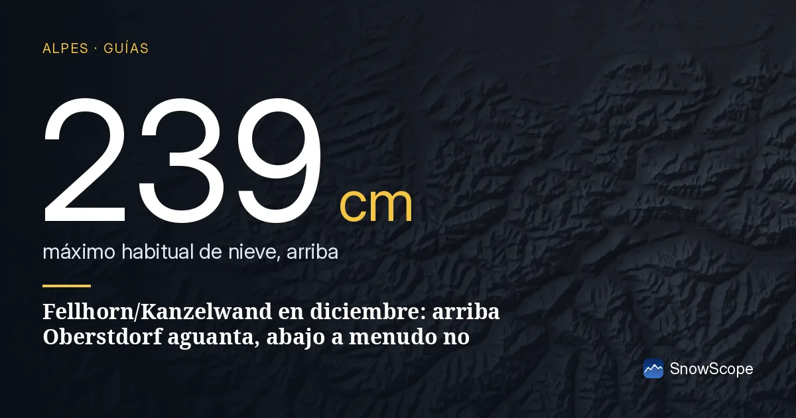

Fellhorn/Kanzelwand en diciembre: arriba Oberstdorf aguanta, abajo a menudo no
La profundidad de nieve en Fellhorn/Kanzelwand en diciembre depende completamente de dónde esquíes. La parte alta se mantiene fiable mientras el valle sigue delgado, lo que te obliga a elegir: pagar el telecabina de bajada o reservar más tarde en invierno cuando la base se recupere.
Consulta la previsión de nieve en tiempo real de Fellhorn/Kanzelwand en la app SnowScopeEspesor de nieve, alertas de nieve polvo y mapa 3D, gratis.
Parte alta: donde vive la nieve de diciembre
La cima a 1965 m está en un invierno diferente al del pueblo. Un típico 15 de diciembre tiene 63 cm, y el 93 por ciento de los últimos 46 inviernos acumuló 30 cm o más tanto en la semana del 15-21 de diciembre como en la de Navidad. Para el 24 de diciembre la profundidad típica alcanza 88 cm.
Esta estabilidad hace que las pistas altas sean la apuesta más segura de diciembre. La arista en sí está expuesta al viento tras tormentas, así que consulta los boletines de avalanchas de Baviera y Vorarlberg antes de salir de la pista.


Media montaña: la zona variable
A 1441 m, media montaña oscila entre fiable y delgada. Un típico 15 de diciembre tiene 30 cm. Las probabilidades mejoran conforme se acerca Navidad: el 59 por ciento de los inviernos alcanzó 30 cm en la semana del 15-21 de diciembre, subiendo al 70 por ciento en la semana de Navidad.
Aquí es donde importa tu semana. Reserva del 15-21 de diciembre y encontrarás 30 cm casi todos los días; reserva del 8-14 de diciembre y te enfrentas a una moneda al aire. En la semana de Navidad la apuesta se gira a tu favor.
La base del valle: a menudo demasiado delgada para confiar
A 918 m, diciembre es poco fiable. La profundidad típica del 15 de diciembre es apenas 10 cm, y 11 de los últimos 46 inviernos tuvieron terreno descubierto en esa fecha. Solo el 13 por ciento de los inviernos vio 30 cm en la semana de Navidad. El primer día típico con 30 cm en la base es el 21 de enero.
Estos números significan: planifica bajar por telecabina, o guarda este dominio para enero y febrero cuando la base madura. El invierno pasado fue peor que lo típico: apenas 2 cm el 15 de diciembre y 0 cm para Navidad.
La perspectiva a largo plazo: diciembre se debilita
En los últimos 15 inviernos, diciembre se ha adelgazado comparado con los primeros 15 inviernos de registros (1980-81 a 1994-95). La cima promedió 59 cm ahora frente a 63 cm entonces; media montaña bajó de 34 cm a 28 cm. La proporción de inviernos con 30 cm a media montaña en la semana de Navidad cayó del 73 por ciento al 53 por ciento.
Esta tendencia sugiere reservar la semana de Navidad solo en elevaciones altas, o trasladar tu viaje de diciembre a principios de mes cuando la cima es más fresca.
Precio: la ventana de Adviento paga
La temporada 2026-27 corre a un precio (EUR 72,90 al día) durante todo el período de Adviento hasta el 20 de diciembre, luego comienza la temporada principal. El pase de 6 días cuesta EUR 344,50 en Adviento y EUR 382,80 después, ahorrando EUR 38,30 si terminas antes del 20 de diciembre.
El pase cubre todos los telecabinas y remontes en Oberstdorf y el Kleinwalsertal, así que puedes moverte entre áreas. Una semana delimitada por el 15-20 de diciembre te da la reducción de precio y mejores probabilidades a media montaña.
Oberjoch: más barato pero más delgado
Oberjoch cerca de Bad Hindelang cuesta menos (EUR 55 al día, EUR 278 por 6 días) pero está más bajo y se adelgaza más rápido. Su cima a 1556 m tiene 30 cm en un típico 15 de diciembre frente a 63 cm aquí; media montaña solo alcanza 30 cm en el 28 por ciento de los inviernos en la semana del 15-21 de diciembre. La apertura está prevista para el 11 de diciembre, dependiendo del tiempo.
Si el presupuesto es la prioridad y puedes esperar hasta después de Navidad, Oberjoch funciona. Para fiabilidad en diciembre, el coste extra de Fellhorn/Kanzelwand te compra nieve real.
Consejos para esquiadores
- Reserva tu pase de 6 días para terminar antes del 20 de diciembre y paga la tarifa de Adviento (EUR 344,50 en lugar de EUR 382,80 después del 20).
- Espera montar el telecabina de bajada la mayoría de los días de diciembre; no confíes en 30 cm en la base hasta enero.
- Si el viento cierra la cima, usa tu pase regional para moverte a terreno de media montaña o cambiar a remontes cercanos del Kleinwalsertal.
- En la semana de Navidad, media montaña ofrece el mejor equilibrio entre profundidad de nieve y condiciones consistentes en ambas elevaciones.
- Después de nieve fresca en la arista expuesta, consulta los boletines de avalanchas de Baviera (Lawinenwarndienst Bayern) y Vorarlberg antes de esquiar fuera de pista.
Sobre estas cifras
Los espesores de nieve de las estaciones son la nieve más profunda en las pistas altas en la fecha indicada; son estimaciones para una zona, no una medida en un punto. Las previsiones pueden cambiar. Consulta siempre el boletín oficial de aludes antes de salir fuera de pista.
Boletines oficiales de aludes: Lawinenwarndienst Bayern
Citar este informe
Para investigación, docencia o prensa: cifras y gráficos reutilizables libremente bajo CC BY 4.0 con esta cita.
SnowScope (2026), Fellhorn/Kanzelwand en diciembre: arriba Oberstdorf aguanta, abajo a menudo no, https://snowscope.app/blog/es/2026/11/fellhorn-kanzelwand-december-oberstdorf-ski-budget.html, consultado el 2026-11-14
SnowScope (Atlas Labs). (2026, November 14). Fellhorn/Kanzelwand en diciembre: arriba Oberstdorf aguanta, abajo a menudo no. SnowScope snow reports. https://snowscope.app/blog/es/2026/11/fellhorn-kanzelwand-december-oberstdorf-ski-budget.html
BibTeX
@misc{snowscope2026fellhornkanzelwanddecemb,
author = {{SnowScope (Atlas Labs)}},
title = {Fellhorn/Kanzelwand en diciembre: arriba Oberstdorf aguanta, abajo a menudo no},
year = {2026},
month = nov,
howpublished = {\url{https://snowscope.app/blog/es/2026/11/fellhorn-kanzelwand-december-oberstdorf-ski-budget.html}},
note = {Published 2026-11-14 16:14 UTC; accessed 2026-11-14}
}· CC BY 4.0 · Métodos, datos y herramientas →
Sigue Fellhorn/Kanzelwand
Gratis: un aviso cuando llega la nieve y la previsión cada mañana.